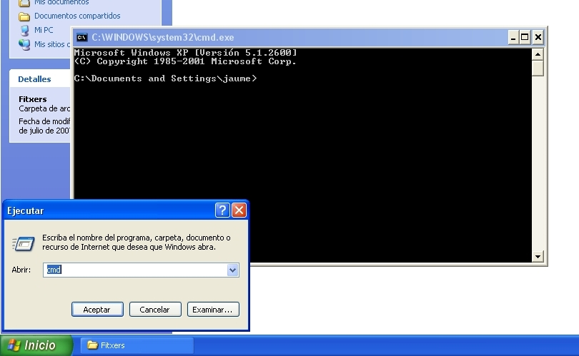
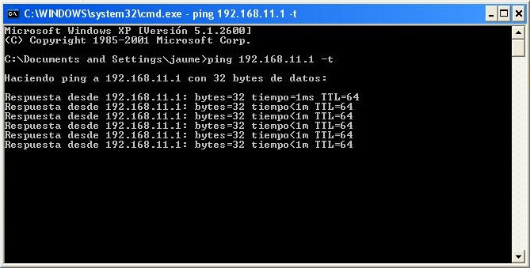
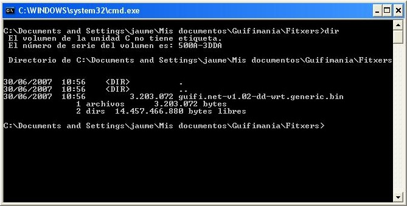
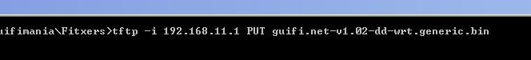
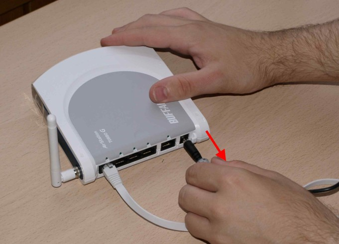
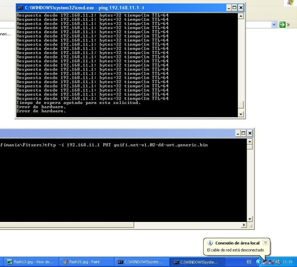
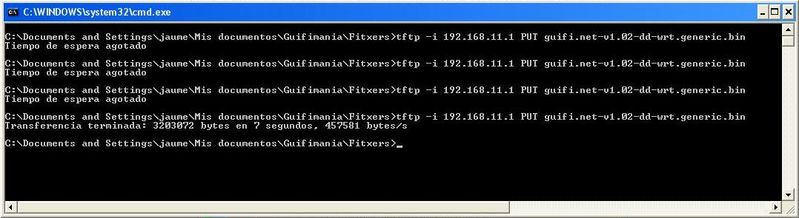
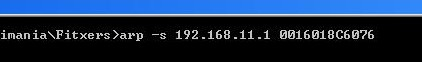
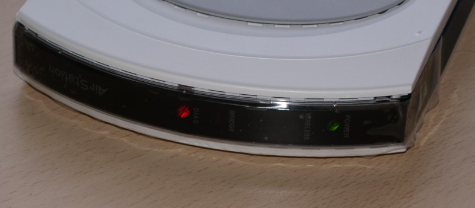
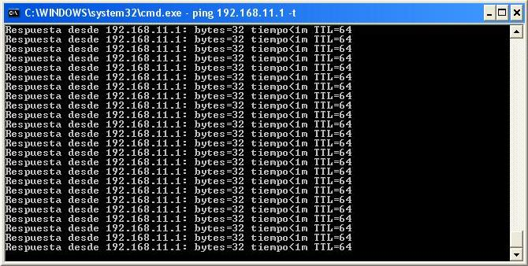

Ara que ens hem baixat el firmware, hem connectat el router i hem configurat la
connexió de xarxa, ja ho tenim tot apunt per modificar-lo.
Com hem dit, els Buffalo necessiten ser actualitzats a través de TFTP. Per poder
utilitzar-ho, anem a inicio > ejecutar... escrivim CMD i cliquem Aceptar.
Ens apareixerà una finestra de terminal.

Per poder veure l'estat de la connexió entre l'ordinador i el router durant els
següents passos escrivim ping 192.168.11.1 -t a la finestra del
terminal i premem retorn al teclat.
Això ens anirà mostrant si hi ha resposta o no des de el router.

Ara obrim un altre terminal, anem a inicio > ejecutar... entrem CMD i cliquem Aceptar. En aquest cas però anem a la carpeta on tenim guardat el
firmware que ens hem baixat.
Com mostra la següent foto, ens trobem a la carpeta que conte el firmware guifi.net-v1.02-dd-wrt.generic.bin.

En aquesta nova finestra de terminal escrivim la següent comanda tftp -i
192.168.11.1 PUT guifi.net-v1.02-dd-wrt.generic.bin PERÒ NO PREMEM RETORN
ENCARA!!!

Tot seguit, desconnectem el cable de corrent del nostre router.

Veurem que el primer terminal ens informa de que hi ha un Error de
hardware a part de un missatge informatiu a la part inferior dreta que diu
que el cable de xarxa està desconnectat.

Ara bé la part més complicada. No us preocupeu si no us surt a la primera, és
normal. El pas consisteix en connectar el router a la corrent un altre cop i
quan s'apaguin totes les quatre llumetes del router situades al darrere premer retorn al terminal on hem escrit allò de tftp -i 192.168.11.1
PUT gufi.net-v1.02-dd-wrt.generic.bin.
Si tot va bé al cap d'uns segons apareixerà el missatge: Transferencia
terminada: XXXXXXXX bytes en X segundos, XXXXX bytes/s
Sinó apareixerà el missatge: Tiempo de espera agotado.

Si no ha funcionat torneu a repetir la operació, prepareu la comada tftp en una
terminal i desconecteu el router de la corrent. Al cap d'uns segons torneu a
connectar el router a la corrent i premeu retorn al teclat. Així fins que
tingueu èxit.
Informatiu: si porteu varis intents fallits proveu la següent comanda: arp
-s 192.168.11.1 <MAC-DEL-ROUTER> això registra l'adreça MAC del
router al nostre ordinador i fa que pugui detectar l'aparell més ràpidament.

Ara el router començarà a fer coses rares, notareu que el terminal que mostra
l'estat de la connexió es connecta i es desconnecta,
a part també veureu que s'engeguen i es paren les llums del davant del router.

Tranquils, tot això és normal, el firmware que hem posat al router s'està
instal·lant i per tant necessita reiniciar-se varis cops.
Al cap d'una estona veureu que el terminal que mostra l'estat de la connexió
mostra tota l'estona Respuesta desde 192.168.11.1: Bytes32 tiempo<1m
TTL=64.

Això vol dir que el router ja està llest per tornar-lo a col·locar i connectar
al lloc definitiu que hem muntat al primer punt.